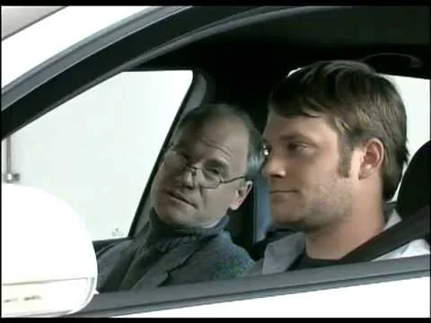
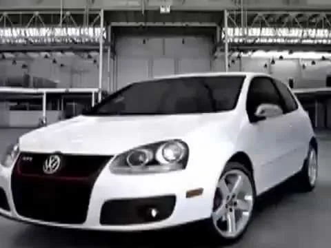

Volkswagen / Consumer brands
Volkswagen
From strategic brief to market launch.
Client / Platform
Volkswagen
Focus
Integrated launches
Scope
Account leadership / Budget management
Product launches spanning digital, television, outdoor, print, and experiential, with senior client relationships and multimillion-dollar budgets.
The challenge
Bring new Volkswagen products to market with a consistent story across channels and a coordinated path from strategy to delivery.
The approach
Translate business objectives into creative briefs, develop campaigns with cross-functional teams, and oversee production and launch.
My contribution
As Account Supervisor, I helped lead product launches, crafted strategic briefs, presented to C-suite clients, and developed and managed multimillion-dollar marketing budgets.
The campaign in action
The work.

Play film / 02
Play film / 03Keep exploring / Related work
Orbitz
The next conversation